Перед вами вторая (техническая) часть отчета о походе по индийским Гималаям. В ней представлены подробности и наиболее яркие впечатления о каждом дне похода, описанные на основе записей из путевого блокнота, треки и все фотографии. Первая (лирическая) часть отчета находится тут
2011_09_11
После обмена денег в аэропорту Дели погрузились в бесплатный автобус, который курсирует между терминалами Т3 и Т1. В автобусе водитель врубил кондиционер, на заднем сидении кто-то сильно закашлял, потом кто-то долго чихал и с хрипом кашлял впереди. Ощущения не самые приятные. На улице жуткая духота, как в парной.
Приехали в терминал Т1, предъявили паспорта и распечатку электронного билета, прошли внутрь, 2 часа поспали на полу, всё-таки сказывается почти бессонная ночь в самолете. По полу рядом с цветами бегала мышь, таская крошки из-под сидений.
Регистрацию на наш рейс объявили за 3 часа, мы, опасаясь углубленного и долго досмотра снаряжения, сразу пошли сдаваться. Опасения были напрасными, наши коробки с велосипедами никаких вопросов не вызвали, а на борт разрешили даже пронести 1, 5 л бутылку с водой. Всё-таки очень всё сильно отличается от Европы.
В ожидании самолета перекусили в кафе, цены низкие, а вот блюда пока неизвестные и пока ещё кажутся очень острыми. С трудом доели 2 порции на четверых.
Во время перелета наблюдаем горы, реки и серпантины, скоро нам по ним ехать! Сам Сринагар расположен на берегу большого озера Дал (Dal Lake, http://en.wikipedia.org/wiki/Dal_Lake) на высоте около 1500 м.
Аэропорт Сринагара военный. Это видно по всему, обвалованные и накрытые камуфляжной сеткой ангары и, конечно, всюду военные с оружием: по пути от самолета до здания аэропорта, в зале прилета большое. Ещё в зоне прилета была какая-то комната коменданта, при входе в которую стоял караул из двух парадно одетых солдат с оружием.
На выезде из аэропорта мощно укрепленный блокпост с массивными воротами.
Самолет компании IndiGO полетел дальше в Jammu.
Коробки с велосипедами долго не выдавали, а получили мы их сильно рваными. Причем порвали их именно в Сринагаре.
Как только мы начали собирать велосипеды мы выявили сразу целый ворох " потерь" от перелета: оторвался ниппель у Паши, потекли вилки у Вани и Саши, а в аптечке протекла зеленка.
Регистрация туристов, приезжающих в штат Джамму и Кашмир, заключается в заполнении очередной анкеты с указанием адреса, где будешь останавливаться, туристической фирмы, по протекции которой ты приехал, сроков пребывания, адреса проживания на Родине и ещё 10-15 подобных пунктов.
На улице опять запись в полицейский журнал.
Плавучий дом на озере, забронированный через Интернет ещё дома для того, чтобы указать его данные при получении визы (по факту на сентябрь 2011 года - это не требуется), оказался в 4-5 раз дороже, самых элитных аналогичных домов, забронировать которые можно прямо на месте. Дом на четверых на 1 ночь, включая доставку на ладье по воде туда и обратно, стоит около 600 рупий за всех. В эту стоимость входит завтрак. В общем бронь не нужна, но надо знать какой-нибудь адрес или название отеля где типа будешь останавливаться.
В плавучем отеле есть водопровод, душ и туалет. Канализация льется прямо в озеро.
В Сринагаре множество зевак и любопытных. Стоит ненадолго остановиться, как тебя облепляет 10-15 человек, начинают трогать велосипед, рюкзак, что-то спрашивать, советовать. Нормально погулять мы смогли только когда полностью стемнело. На вечерних улицах пробовали обжаренное на огне мясо с шерстью, его подают вместе с маленькой мисочкой вареных кусочков печенки, обмазанных чем-то острым, и яйцом. Миски моют в общем ведре. Дешево и необычно.
Начало похода очень многообещающее!
Computer (Length/Duration/Average Speed): 22//
GPS (Length/Vertical Up/Vertical Down): 20.7/211/267
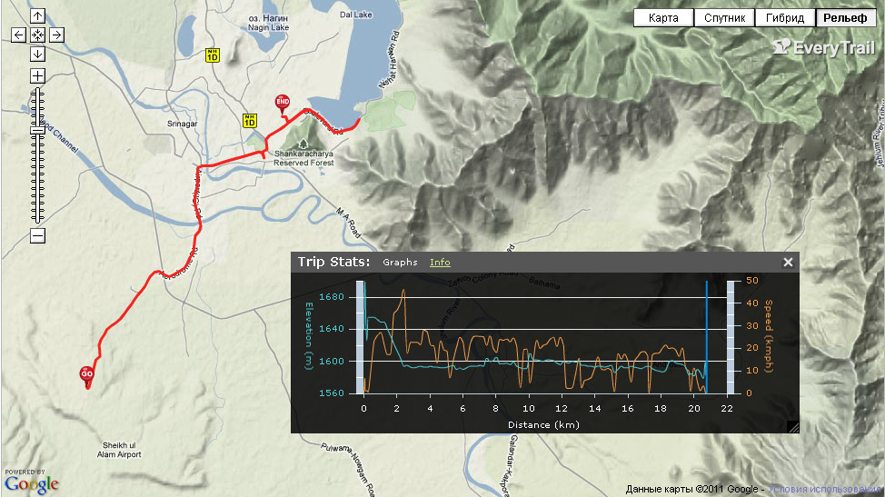
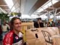 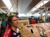 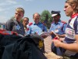 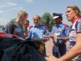 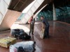  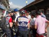 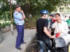 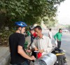 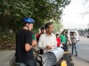 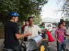 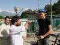
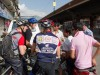 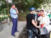 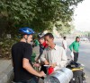 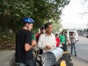 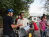 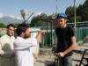 
 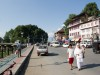 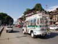 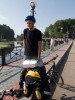 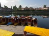 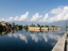 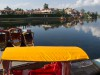 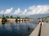 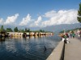 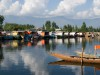 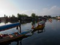 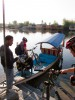 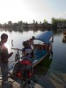 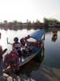 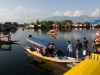 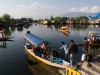 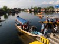 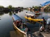 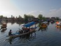 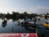 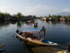 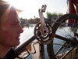 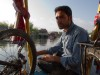 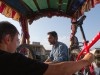
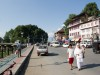 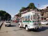 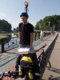 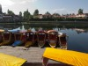 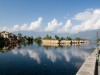 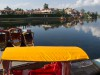 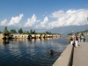 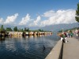 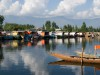 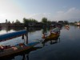 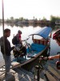 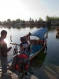 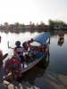 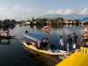 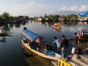 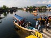 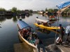 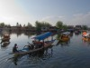 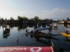 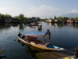 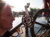 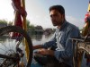 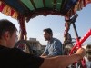  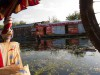 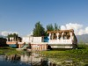 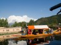 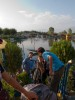 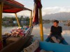 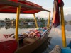 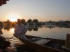 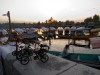 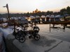
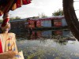 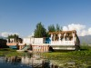 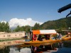 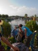 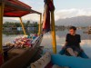 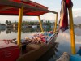 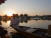 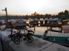 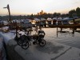